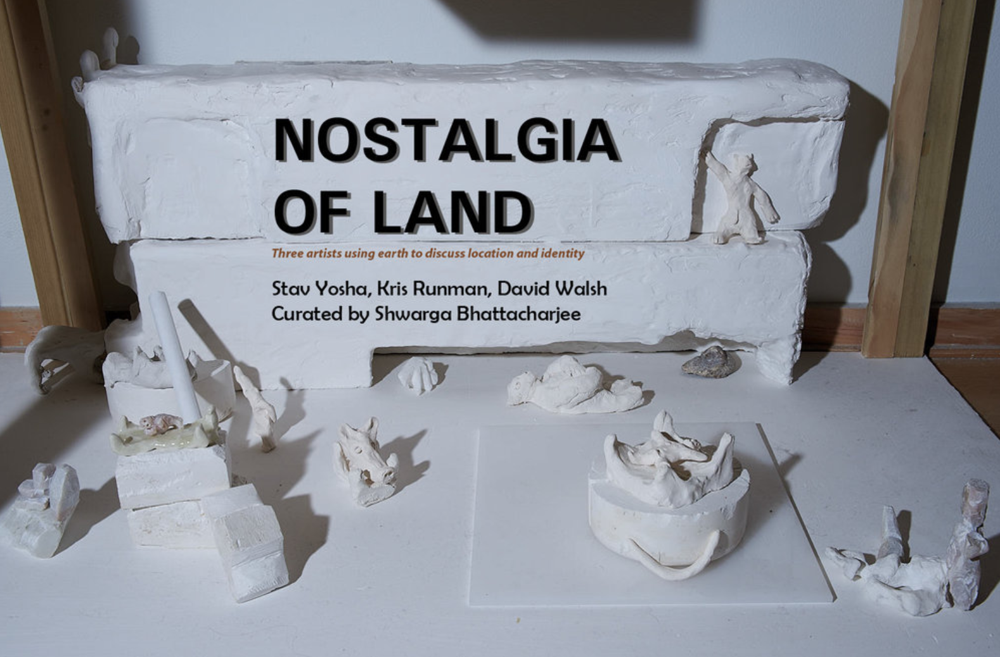

NOSTALGIA OF LAND
September 2018
Saturday, September 29, 2018
ARTIST PANEL DISCUSSION 6 PM
PERFORMANCE BY KRISTINE RUNMAN 7PM
"Where do we belong and where we are from?" are kinds of questions that are always tied to the idea of territory. Day by day migration is becoming a vital issue in our world. Due in part to globalization, land and identity are frequently viewed from a variety of different perspectives; sometimes even a misinformed or directly opposing perspective. But this issue gives us the opportunity to investigate those individuals who deal with and express their thoughts about the complexity of land. “Nostalgia of Land” is bringing three artists Kristine Rumman, David F Walsh and Stave Yosha, who deal with the complexity and the politics of the land which relates to their personal history. That history is different for each of them, but one common thread is perspective. It’s historical, identical, and maybe in a certain way ideological. They might, might not stay in that land or on that history, but they dig their attachment, their belonging to the land. There is somehow a tone of losing or maybe a portion of darkness which reflects their honesty to their work. "Nostalgia of Land" proudly combines these three artists to enhance our thinking and ideas on these ongoing issues of our society.
- Participating Artists:
- Dave F. Walsh
- Kristine Rumman
- Stav Yosha
Guest curated by Shwarga Bhattacharjee
